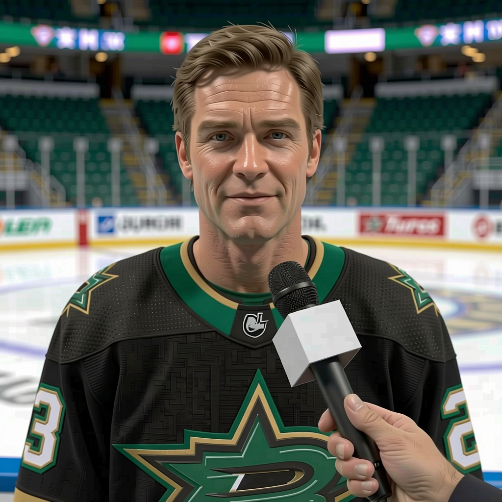

The Turco Anomaly: 96 Overall, $0.60M, and a 9-Game Win Streak
The league's highest-rated expiring contract is a goalie earning less than a bottom-six winger. The team holding him is on the best run in the West, and the question is whether they lock him up or watch him walk.
 E.J. "Ears" CallahanInsider · The Hot Stove
E.J. "Ears" CallahanInsider · The Hot Stove

Turco extension before deadline

The Bureau's Book has  Marty Turco96 at 96 overall. He is the best-rated player on the entire contract-year class. He is making $0.60M. His contract expires in June.
Marty Turco96 at 96 overall. He is the best-rated player on the entire contract-year class. He is making $0.60M. His contract expires in June.
The next best-rated expiring goalie in the league is  Roman Cechmanek91 at 91, and he is making $3.30M. The gap between the two is 5 points in the Book and $2.70M in salary. That is not a market. That is a rounding error in a room full of real money.
Roman Cechmanek91 at 91, and he is making $3.30M. The gap between the two is 5 points in the Book and $2.70M in salary. That is not a market. That is a rounding error in a room full of real money.
 Dallas Stars is 19-9-1, on a 9-game win streak, sitting 45 points behind
Dallas Stars is 19-9-1, on a 9-game win streak, sitting 45 points behind  Toronto Maple Leafs in the overall race. Their payroll is $66.88M, their cost per point is $1.49M. They are the Presidents' Trophy winner from last season still operating like a mid-table club that got lucky.
Toronto Maple Leafs in the overall race. Their payroll is $66.88M, their cost per point is $1.49M. They are the Presidents' Trophy winner from last season still operating like a mid-table club that got lucky.
The Morrow problem is the same problem
 Brenden Morrow86 is 25 years old, 86 overall, 44 points in 32 games, $1.30M, expiring. His morale is 95. He is not a goalie, but the shape of the question is identical: a player on the Book who is worth more than his number, on a team that can afford to keep him but has never shown the will to spend like a contender.
Brenden Morrow86 is 25 years old, 86 overall, 44 points in 32 games, $1.30M, expiring. His morale is 95. He is not a goalie, but the shape of the question is identical: a player on the Book who is worth more than his number, on a team that can afford to keep him but has never shown the will to spend like a contender.
Two under-market expiring deals on one roster, on a team that is 45 points deep and still $14M below the league's top payroll. The math says re-sign. The history says wait.
Who catches him if he walks
The expiring goalie class is thin.  Sean Burke84 at 88 on $4.20M.
Sean Burke84 at 88 on $4.20M.  Pascal Leclaire84 at 88 on $1.10M, 22 years old.
Pascal Leclaire84 at 88 on $1.10M, 22 years old.  Jocelyn Thibault84 at 88 on $2.80M.
Jocelyn Thibault84 at 88 on $2.80M.  Patrick Lalime92 at 88 on $1.90M. Nobody above 91. Nobody below $0.80M except Turco.
Patrick Lalime92 at 88 on $1.90M. Nobody above 91. Nobody below $0.80M except Turco.
If he hits the market, the buyer list is short and the price will not be $0.60M. A 96-rated goalie at 29, on a winning team, in a book with no other 96-rated goalie available, does not go for the salary of a fourth-line center. The question is not whether he gets more. The question is whether Dallas Stars pays it or watches a rival pay it.
The 9-game win streak is doing the work. Every night they win, the argument for keeping him gets a little harder to say no to. Every night they lose, the cap-space argument gets a little louder.
They are 12-3 at home. The streak is alive. The deadline is February. The clock is the same clock it always is, but this year the number on the other side of the glass is 96 and the number on the ledger is $0.60M, and those two facts do not belong in the same sentence.
Until they do.